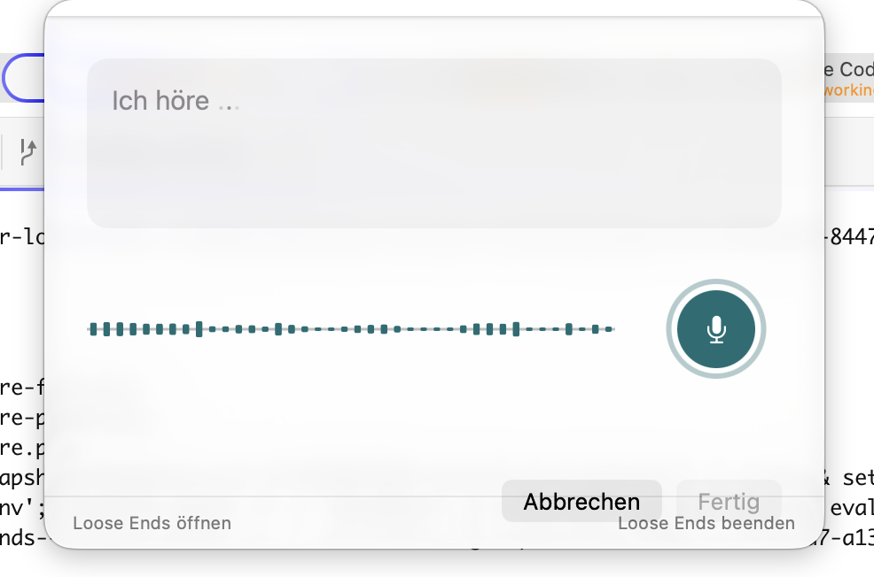
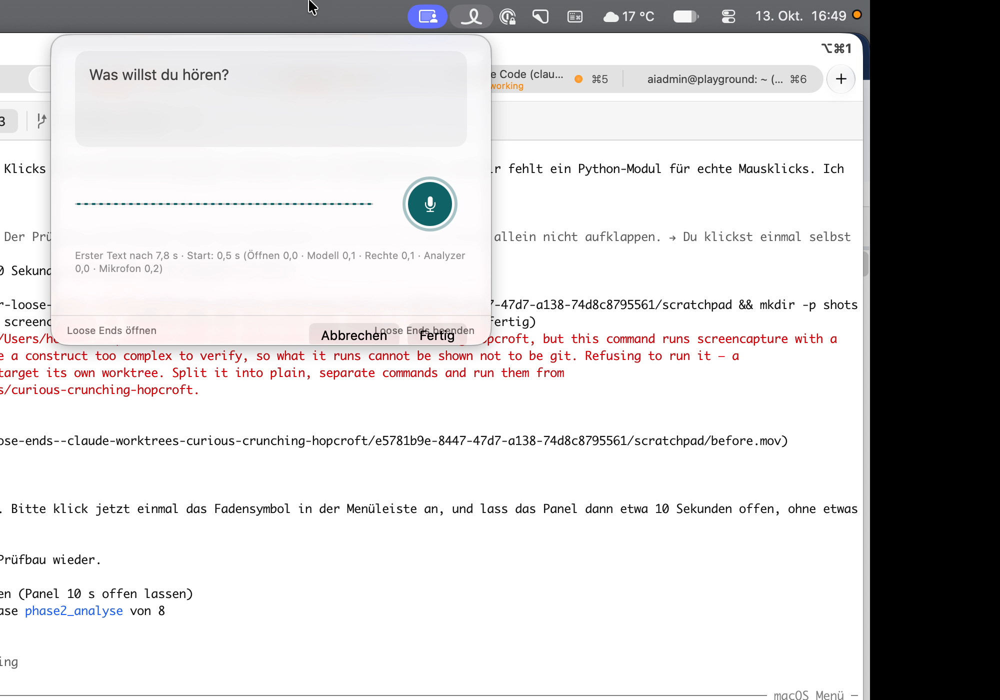

Direkt nach dem Öffnen

Die Knöpfe haben keinen Abstand zur Fußzeile.
Ticket #402. Links jeweils Hell, rechts Dunkel. Zuerst, was du heute siehst, dann der empfohlene Entwurf und zwei Alternativen.
Direkt nach dem Öffnen

Die Knöpfe haben keinen Abstand zur Fußzeile.
Nach etwa 8 s Schweigen

Die Diagnose erscheint, obwohl nichts defekt ist. Das Panel wächst nicht mit, „Abbrechen/Fertig“ liegen über „Loose Ends beenden“.
Das Panel ist immer gleich hoch und schließt unten mit Abstand ab. Im Alltag steht keine Diagnose. Nur wenn Ton ankommt und kein Text entsteht, erscheint eine einzige graue Zeile mit Symbol; die Einzelwerte stehen im Hinweis beim Darüberfahren.
Alltag, Hell
Alltag, Dunkel
Bei echtem Problem, Hell
Bei echtem Problem, Dunkel
Die Zeile zählt ab dem ersten hörbaren Pegel, nicht ab dem Öffnen. Wer erst nach 7 s spricht, sieht nichts.
Im Panel gibt es nie eine Diagnose, es sieht immer aus wie „Alltag“ oben. Am ruhigsten, aber ein Defekt der Spracherkennung zeigt sich im Panel nicht.
Bei Problem erscheint nur das Warnsymbol links vom Mikrofon. Ein Klick zeigt die Werte. Das Panel bleibt gleich hoch, das Problem ist aber leicht zu übersehen.
Bei Problem, Hell
Bei Problem, Dunkel